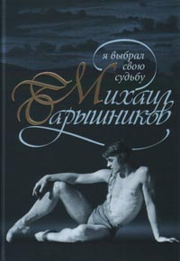

Writers of The Third Wave
Russians in America: The Third Wave
Writers
Overview
Mark Popovski (Марк Поповский) in 1992 sent out questionnaires to over 100 Russian writers living in the United States. Some of the responses were used as the basis for his own articles, cf. На другой стороне планеты, but there is much more to be found in the actual questionnaires that are now housed in his archive at the Bakmeteff Archives at Columbia University in New York City. Olga Matich (Ольга Матич) in an article on "Diaspora as Defamiliarization" (Диаспора как отстранение) Russian Studies, II, 2 (1996) 177, has her own list of Third Wave writers. John Glad provides an "Annotated Index of Personal Names" to his Russia Abroad. A bibliographic approach is found in Bosilka Stevanovic and Vladimir Wertsman, Free Voices in Russian Literature, 1950s–1980s: A Bio-Bibliographical Guide. I have used all as a starting point for those listed below, but make no claim of comprehensiveness. In the list below I have chosen not to separate prose writers from poets, or single out critics, because for many the lines were blurred. I have also provided a separate page for works that deal primarily with America, although this too is a fledgling effort. The primary source of the information below unless otherwise noted is Free Voices.
The Giants
Few would question that the inclusion of Russian writers living in America should include Alexandr Solzhenitsyn (Александр Солженицын), Vasily Aksyonov (Василий Аксенов), Iuz Aleshkovsky (Юз Алешковский), Joseph Brodsky (Иосиф Бродский) (his Nobel prize speech in Russian) , Sergei Dovlatov (Сергеи Довлатов) and Sasha Sokolov (Саша Соколов). Their works attracted attention not only of the Russian speaking audience, but of Americans, too, in translation. Eduard Limonov's (Эдуард Лимонов) scandalous for the time, It's Me, Eddie! (Это я, Эдичка), also attracted notoriety. Let me deal with them first, with apologies to those who feel this short list is too short. Each has a web page that can be accessed by clicking on their names above.
The Others.
Here in alphabetical order are writers who wrote in Russian but who resided for a period in the United States. The information is brief with links to more detailed sites when it is available. (I have generally included only those whose time in the United States corresponds to the era 1975-1985).
Agafonov, Vasilii. Агафонов Василий (1942-) pseudonym Iulian Gantman (Юлиан Гантман), Leaves USSR in 1979 arrives NY 1980. Contributes to Новое Русское Слово. Скажите маме – я в порядке (NY: 1984). Стрелец, Континент. Answers to Popovski in latter's archive, Box 1, Folder 18.
Аlekseeva, Liudmila Алексеева Людмила (1932-) Comes to US in 1980. Publishes with Серебряный век, Ardis, Hermitage.

Alovert, Nina Нина Аловерт (1935-). Leaves for US in 1977. Authors articles, short stories and book about Baryshnikov in Russia (1984). "Нина Аловерт - известный балетный фотограф и критик. Она была свидетельницей начала творческого пути Барышникова в Ленинграде, в Кировском театре, а с 1977 года - и на Западе. В книге живо и увлекательно рассказывается о жизни молодого танцовщика в Ленинграде, его любви, его друзьях, коллегах, домашнем быте, отдыхе, непростых взаимоотношениях с руководителями Кировского театра и балетной труппы, об исполненной драматизма, почти детективной истории, окружавшей решение Барышникова остаться на Западе в 1974 году, о других важных моментах его биографии в России и в Америке."Al'tshuller, Mark Альтшуллер Марк. (1929-) Leaves for US in 1978.
Andreeva, Viktoria Андреева Виктория (1942-2002) leaves Russia in 1974. Together with her husband Arkady Rovner (Аркадий Ровнер) publishes Gnosis. " Андреева Виктория Алексеевна выросла в Москве. Окончила филологический факультет МГУ (1960-1965). В 1974 эмигрировала в США; училась в Нью-Йоркском университете на кафедре сравнительной литературы. Была одним из двух редакторов журнала 'Гнозис' (совместно с Аркадием Ровнером) и одним из четырёх редакторов 'Антологии Гнозиса современной русской и американской литературы и искусства' (Нью-Йорк, 1982). Стихи начала писать с 1960-х годов. Примыкала к подпольным, неофициальным литературным кругам Москвы 1960-х и 1970-х годов. Стихи публиковались во многих эмигрантских сборниках и журналах, а с 1989 и в российских журналах. Автор поэтического сборника Сон тверди (1987, Нью-Йорк, 'Гнозис пресс'; переиздана в 1989 там же с параллельными переводами английского поэта Ричарда Маккейна и в 2002 в дополненном виде - в Москве). В 1989 вместе с Аркадием Ровнером написала театральную пьесу Чаадаев (1989, Нью-Йорк). Автор многих статей о литературе и религиозной философии (Вл. Соловьёв, Блок и Белый, Бердяев, Киреевский и Чаадаев, Толстой и Фет), которые публиковались в эмигрантских журналах, а с 1989 и в российских. В 1985-1991 написала Телефонный роман - новаторский роман, состоящий из телефонных монологов одинокой русской писательницы в Нью-Йорке (напечатан в 1997 в Литве). С 1994 жила в Москве. Работала над проектом публикации Отцов церкви (Ориген, Климент Александрийский, Иероним Стридонский) в серии 'Учители неразделённой церкви'."
Antonovich, Aleksandr Антонович Александр (1945-). Leaves in 1981 for US. Publishes in НРС, Новый Журнал, Время и мы and Грани. Надгробье Антокольского: Повесть об утраченном и заимствованном.(Hermitage: 1982). Родился в 1945 году в Москве. Окончил литинститут. Автор четырех книг (одна - в переводе на французский). Лауреат премии Даля - за первую часть романа 'Многосемейная хроника' (1979 год) и премии Катаева - за повесть 'Отпуск' (1994). Безрезультатно выдвигался на Букеровскую премию (1998). В свое время достаточно много публиковался. Пишу прозу, стихи и песни. Еще и фотографирую. Живу в Нью-Йорке. Служу.
Aranovich, Feliks Аранович Феликс (1930-). Leaves in 1979. Надгробье Антокольского: Повесть об утраченном и заимствованном.(Hermitage:1982)
Armalinsky, Mikhail Арамалинский Михаил (actually Mikhail Pel'tsmann.) 1947-) Leaves in 1976. Publishes poetry После прошлого: стихи 1977-1981. (Hermitage: 1982). MIP Company in Minneapolis. He writes and publishes what many consider to be scandalous literature, not the least because they refer to Pushkin. See Popovski 1,21. Perhaps not surprisingly Russian search engines ignore him.
Babyonysheva, Sarra Бабенышева Сарра (1910-) leaves for US in 1981. See SSSR: Vnutrennie protivorechija (Внутренние противоречия). "Бабенышева Сарра Эммануиловна (р. 1910, Бобруйск) - в 1970-е годы сотрудничала в Фонде помощи политзаключенным и их семьям. Литературный критик, член Союза Советских Писателей (Москва). Мать Бабенышева А.П. В 1981 эмигрировала в США."
Babich, Pavel Бабич Павел (1933-). Leaves in 1980. Works for newspapers. See "Все сказать и все дослушать: Стихи " Стрелец, 7 (1985), p. 23.
Bagchanian, Vagrich БАХЧАНЯН Вагрич (1938-). Comes to US in 1974. From 1983-1984 he is artistic director of Семь дней "Вагрич БАХЧАНЯН (Нью-Йорк) — поэт, художник. Родился 23 июля 1938 года в Харькове. Переехал в Москву в середине 60-х годов. В 1967 — 1974 годах работал в отделе юмора "Литературной газеты". Коллажи Бахчаняна публиковались также в журналах "Знание-сила" и "Юность". Эмигрировал в США в 1974 году."
Bar-or, Roman Бар ор Роман (1953-) Comes to US with his wife, Ina Bliznetsova. Publishes poems in Время и мы and Стрелец.
Barabtario, Gennadii. Барабтарио Геннадий (1949-) Comes to US in 1979. Does articles, translations and poems, Sometimes uses pseudonym V. Evgen'ev.
Baskov, Aleksandr. Басков Александр (1937-) This is a pseudonym. Comes to US in 1977. Publishes in newspapers.
Batchan, Aleksandr Батчан Aleksandr (1953-2007) Reviews in newspapers. Uses pennames V. Gerasimov, and A. Matveev. "Умер наш товарищ журналист Алик Батчан. Известие пришло в воскресенье утром из Праги. Он работал там на радио "Свобода". А еще в четверг Алик был в Москве, и мы строили планы повидаться на праздники в Чехии или в Вене. ...Карьера Алика начиналась в 70-е годы в Нью-Йорке в легендарном "Новом американце", где он, тогда 20-летний юноша, писал кинорецензии. Согласитесь, не каждому так везет - работать с Довлатовым. Потом ему много лет привелось работать в русской редакции "Голоса Америки", и тоже повезло. Московское бюро знаменитой радиостанции открывал Алик Батчан в 1991 году. Его московская командировка началась в горячем августе 1991 года - чем не журналистская удача?" See his article.
Belinkova, Natalia Белинклова Наталья (1930-). Comes to US in 1968. Edits Новый Колокол (Альманах).(London 1972).
Ben'iaminov, Meer Беньяминов Меер (1913-). Comes to US in 1976. Вухорские евреи (NY: 1983).
Bergel'son, Marina Бергельсон Марина(1943-) US 1978. Married name is Marina Raskin. Poems in 22.
Berman, Filipp Берман Филипп (1936-). US 1981. Edits Katalog (Ardis: 1982) and Registrator (Ardis: 1984).
Bershadskaia, Liubov Бершадская Любовь (1916-1986). Leaves in 1970 to Israel then US. Растоптанные жизни: рассказ бывшей политзаключенной (Paris 1975).
Bernshtam, Mikhail Бернштам Михаил (1940–). US 1976. Historical essays.
Birman, Igor Бирман Игорь (1928-). Comes to US in 1974. Editor of Russian magazine. President of Foundation for Soviet Studies. A noted economist.
Blinov, Valerii Близнецов Валерий. (1950-) US 1977. Publishes in Novyj zhurnal.
Bliznetsova, Ina Близнецова Ина (1958-) US 1979. Writes poems. Popovski, 1, 25.. Publishes in Blue Lagoon, Континент, Долина теней (1985).
Bobyshev, Dmitrii Бобышев Дмитрий (1936-) US 1979. Major poet of emigration. Popovski 1, 26. He writes a six page letter to Popovski recalling the words of Georgy Adamovich that Литература - приглашение в ад."
Bogachinskaia, Inna Богачинская Инна (1946-). US 1979. Poems in periodicals. Стихия: избранные стихи (NY: 1983). Popovski, 1,27
Boldyrev, Petr Болдырев Петр (1936-). US 1976. Essayist in НРС and Новый Американец.
Brai, Rita Брай Рита (1936-), pseudonym of Dorita Braiburg. US 1975. Правдивая история ее жизни: Роман (Holyoke: N.E. Publishing Co., 1986).
Brakman, Rita Бракман Рита Выбор в аду: Жизнеутверждение солженицынского героя . (Hemitage: 1983).
Briker, Boris Брикер Борис (1954-). In 1980 comes to Canada with A. Vishevsky, Собачье дело. (Третья волна: 1983).
Chalidze, Valerii Чалидзе Валерий (1938-) Chalidze had his citizenship revoked and was refused re-entry into the USSR in 1972. Founder and editor of Khronika Press in 1973, Chalidze Publications in 1979, Edits SSSR: Vnutrennie protivorechija (Внутренние противоречия)and Khronkia tekushchix sobytij (Хроника текущих событий). He published Khrushchev's memoirs and the Trotsky papers. He also published a number of books in English on human rights: To Defend these Rights (1975), Criminal Russia (1977).
Draskii, Iosif Драский Иосиф (1942-), a pseudonym. US 1979. Essayist for newspapers.
Dmitriev, Vadim Дмитриев Вадим. (1946-). Comes to US in 1981.
Draitser, Emil Драйцер Эмил (1937-), US 1974 (1975). Newspapers and Пещера неожиданности (NY Effekt: 1984). He has published numerous books and is a professor at Hunter College. Popovski, 1, 32.
Druzhkin, Aleksandr Дружкин Александр Popovski 1, 33 Arrives in West 1982. He writes in English. (Nothing else known of him).
Druzhnikov, Yuri Дружников Юрий Leaves 1987 settles in US. Popovski, 1, 34
Dryzhakova, Elena Дрыжакова Елена (1931-) US 1978. Publishes books with Mark Al'tschuller.
Dzhin, Nodar Джин Надар (1942-). US 1980. Откровения еврейского душа. (US: 1984).
Efimov, Igor. Ефимов Игорь (1937-). US 1978. Writer, publisher of Hermitage. An early interview with Efimov was published in Русская мысль October 5, 1978, 5. Popovski, 1, 35.
Elinson, Genrikh. Элинсон Генрих (1935-). US 1973. "Член: Ленинградская повесть" 22, 37 (1984), 120-136.
Endlin, Mark Эндлин Марк (1938-). US 1975. Чапаев в Америке.(NY Smeshanina, 1983).
Eniutin, Viktor Энютин Виктор (1943-). US 1976. 1976-1979 editor of Новый Журнал. Sometimes uses penname Viktor Zubov. Publishes several books 1983 with Kubik of Monterey, CA.
Eniutina, Vera Энютина Вера (1914-). Аctress, comes to US in 1978.Роли и жизнь (Monterey CA).
Esenin-Vol'pin, Aleksandr Есенин-Вольпин Александр (1925-). US 1972. Свободный философский трактат. Published in US in 1961.
Ezerskaia, Bella Езерская Белла (1929-) US 1978. Мастера: сборник интервью .( Hermitage: 1982) Popovski, 1, 36.
Fel'shtinskii, Iuri Фельштинкий Юрий (1956- ). US 1978. Publishes books and in periodicals on historical themes.
Fleishman, Lazar Флейшман Лазар (1944-) 1974 to Israel then to US.
Gal'perin, Iurii Гальперин Юрий. (1947-) 1979 to Switzerland. Most cherez Letu (Мост через Лету), Igraem bljuz, Russkij variant (Играем блюз, русский вариант). (Not really American-but should be looked into.) Bern at the Historical Museum.
Genis, Aleksandr Генис Александр (1953-). Us 1977. Co-edits. Семь дней. Popovski, 1, 38. One of the major literary critics of the emigration. See page on critics
Gershgorin, Bela Гершгорин Бела. Popovski, 1, 39. Arrives US 1991.
Gershgorin, Roman Гершгорин Роман. Playwright, mentioned in article in Topos. Popovski, 1, 40. Bela Gershgorin also of Brighton Beach mentions that she arrives in 1991. (Popovski, 1, 39).
Gershkovich, Aleksandr Гершкович Александр (1924-). US 1981. Theater critic publishes book about the Taganka Theater with Chalidze Publications.
Gershov, Viktor Гершов Виктор(1927-). US 1977. Ностальгия: рассказы. (NY 1984).
Gessen, Elena. Гессен Елена (1944-). US 1981. Translator and essayist.
Girshin, Mark Гиршин Марк(1923-). US 1974.Брайтон Бич. (1982). Убийство эмигранта. Hermitage: 1984 He has been translated into English. Several of his stories in Russian can be read on the internet. Popovski, 1, 42.
Glez, Eli. Глез Ели (1931-). 1978 to Israel then US. pseudonym of Il'ja Glezer. Невидимые письма. (NY: 1984). See "Американский студент " Время и мы , 76 (1984), 153-170.
Glezer, Aleksandr. (1934-). See an interview with him "Критерий – художественность; интервью с Александром Глезером " New American Special issue February-March 1987. pp. 46-48. He is also Director of the Museum of Contemporary Russian Art in Jersey City. The web site links to dozens of Russian artists both inside and ourtside of Russia. Glezer authored poetry and a book of memoirs: Человек с двойным дном (1994). He promises another volume devoted to his experience in America. Read an interview with Дружба народов.
Goland, Efim Голанд Эфим (192?-) US 1975. Они хотят домой (NY 1980).
Golovskoi, Valerii Головской Валерий (1938-). US 1981. Film critic.
Grigorenko, Andrei Григоренко Андрей(1945-). US 1975. А когда мы вернемся . (NY 1977).
Grigorenko, Petr Григоренко Петр (1907-1987). US 1977.
Iakobson, Mikhail Якобсон Михаил (1939-). Leaves 1971 to Israel, later to US. Карзубый: Лагерная повесть. Paris-NY, Третья волна, 1983.
Ianov, Aleksand Янов Александр (1934-). To US in 1974. Historian and essayist.
Iarmolinskii, Iurii Ярмолинский Юрий (1948-). US 1975. Publishes in Ekho (Эхо) 1980.
Iarov, Roman Яров Роман (1933-). US 1977. Publishes in НРС and Новая газета . Музыка для усталых любовников: Рассказы . (NY Effekt, 1985).
Itskov, Iosif Ицков Иосиф (1905-). Essayist, lawyer. US 1979. Writes for НРС, Панорама.
Iung, Ekaterina (Cathy Young) Юнг Екатерина (1963-). US 1980. Works for Новая газета .
Iupp, Mikkhail Юпп Михаил (1938-). Real name: Mikhail Taranov. НРС. Срезы: Стихи. (Holyoke, 1984). Пространство: Вторая книга стихотворений и поэм. Ill. M. Shemiakin. 1986.
Kafanova, Ludmila Кафанова Людмила. Arrives 1974? Popovski 1, 45. Publishes in Вестник and Панорама. 687 W 204th Street, NY NY 10034. She also contributes to Novaja gazeta (Новая газета).
Kaminskaia, Dina Каминская Дина (1920-). US 1978. Запсики адвоката.(Benson VT Khronika, 1984).
Kapelian, Grigorii Капелян Григорий (1940-). US 1978. Publishes in Гнозис. Also Greg Kapelyan Обсидионовый кумир (1989). Popovski 1, 46
Kaplan, Roman Каплан Роман (1934-). US 1977. НРС. [home 212 517 9773, work 212 757 0168.]
Kashkarov, Iurii Кашкаров Юрий (1940-). US 1977. editor at Новый Журнал. Popovski, 1, 47
Katsenelinboigen, Aron Каценелинбойген Арон (1927-2005). US 1973. Economic themes.
Khalif, Lev Халиф Лев (1930-). 1977 US. ЦДЛ: Центральный Дом Литераторов . (LA Almanac, 1979). ША, я еду в США: Трагикомедия с вернисажем (NY 1982). Молчаливый пилот . (NY: Russica, 1985). popovski, 1, 48. "Наша третья волна, мне кажется, больше писательской, чем читательской."
Khudiakov, Genrikh Худяков Генрих (1930-). US 1974. Penname Avtograf (Автограф). Publishes in Гнозис.
Klenov, Andrei Кленов Андрей (1920-). pseudonym of Aron Kupershtok. US 1973. Картинки Нью-Йорка. (1983) Откровение: Книга поэм. NY 1984. Утренний голос: Роман в монологах. (NY: Paris (?). 1986.
Klepnikova, Elena Клепникова Елена (1942-). US 1977. Борьба в Кремле: От Андропова до Горбачева. (NY-Jerusalem: Время и мы, 1986).
Kliueva, Elena Клюева Елена (1918-). US 1978. Poetry and prose in newspapers and jornals. Волшебные узоры: Стихи для детей. NY 1983. Светотень: Стихи. NY: 1984. Popovski (II, 245) calls her the "poetess of the emigration." Popovski 1, 49.
Kogan, Mark Коган Марк (1937-). Arrives 1980. Шайтан: Детективный роман. (NY 1986.) Popovski 1, 50. "Если представить себе человека, сидящего на дне глубокого колодца и смотрящего на звезды, то... это будет, образно выражаясь, жизнь русского литератора на Западе."
Komar, Vitalii Комар Виталий (1943-). US 1977. Artist.
Kopel'man, Simon Копельман Симон (1922-). US 1979. Publishes in НРС and Новый Американец. Pen name is R. Vainer. Сыновым сердцем. Springfield MA, 1984). Юнг-значит молодая. (Springfield, 1987).
Korotiukov, Aleksei Коротюков Алексей (1932-). US no date. Нелегко быть русским шпионом: Роман. (Hermitage: 1982).
Korzhavin, Naum Коржавин Наум (1925-). US 1973. Noted poet. Избранные стихотворения. (Pegas: 1983).
Kosinskii, Iosif Косинский Иосиф (1929-). 1981 US. Translator. НРС. Also helped to edit Литературное зарубежье and Литературный курьер.
Kostalevskaia, Marina Косталевская Марина (1947-). US 1979. Publishes poetry in journals.
Kostsinskii, Kirill Косцинский Кирилл (1915-1984). Pseudonym of Kirill Uspenskii. US 1978. Worked on slang dictionary.
Kovalev, Aleksei Ковалев Алексей (1944-). US 1981. writer and actor.
Kozlovskii, Vladimir Козловский Владимир (1947-). US 1974. Hundreds of articles. Translator. One of first to pay attention to homosexual jargon. Popovski 1, 54.
Krasin, Viktor Красин Виктор (1929-). US 1975. Суд (NY: Chalidze, 1983).
Krasnoshchekova, Elena Краснощекова Елена. US 1987 Publishes in Новый Журнал and НРС. Избранная проза семидесятых (Hermitage: 1990). Book on Goncharov. Popovski, 1, 54.
Kreid, Vadim Крейд Вадим (1936-). Poetry and essays. Восьмигранник: Стихи. NY: Effekt, 1986. Popovski, 1, 55. In his letter of Dec 31, 1992 p. 2 he says "Я отдал много времени изучению творчества и жизни поэтов (и не только поэтов) первой эмиграции; я очень хорошо понял (пронзительно и экзистенциально), что их литературная жизнь не была прожита зря. Мне думается, что и для литераторов Третьей волны найдется своя ниша в истории русской литературы."
Kreps. Mikhail Крепс Михаил (1940-). UD 1974. Poetry and criticism. Co-edits almanac Встречи.
Krotov, Maksim Кротов Максим, pseudonym (1958-). Poetry and essayist. Семь дней.
Ktorova, Alla Кторова Алла pseudonym of Viktoria Kochurova-Shandor Sandor). Comes to US in 1950s Лицо Жар-птицы. (1969, NY Effekt: 1984). Popovski, 1, 56
Kuperman, Iser Куперман Исер (1922-). 1978 US. Checkers champ in USSR. Судьба чемпиона. (1984).
Kuzminskii, Konstantin Кузминский Константин (1940-). US 1975. Editor of Blue Lagoon Anthology of Modern Russian Poetry.Popovski 1, 57.
Lapirov, Il'ia Лапиров Илья (1930-). US 1981. Publishes poems in Панорама. Век: Книга стихов. (NY 1986).
Lavrov, Lev Лавров Лев (1930- ). Real name Lev Skvortsov. US 1980. Необыкновенный фашизм: Политический трактат. (NY 1983).
Lefevr, Vladimir Лефевр Владимир (1936-). US 1974. Essayist, mathematician.
Lekht, Iurii Лехт Юрий pseudonym. (1937-). Lekhtgol'ts, Iurii Лехтгольц Юрий real name. YS 1977. У Лукоморья: Стихи. (Paris 1981).
Lemkhin, Mikhail Лемхин Михаил (1949-). US 1983. Articles and essays in НРС, Семь дней. "Popovski, 1, 59 Letter of Dec. 24, 1992 p. 2. "Среднему литератору трудно, поскольку он, как правило, претендует на большее, нежели то, чем он на самом деле является."
Lempert, Simon Лемперт Симон (1914-). Pseudonym, real name Semen Kontorovich (Семен Конторович). US 1980. Где кончается Европа... (Philadelphia: Mir, 1984). Gde konchaetssa Amerika (Где кончается Америка, 1988). Popovski 1, 60.
Leonidov, Pavel Леонидов Павел (1927-1984). US 1973. Founded New York publishing house. Novella in НРС: Люди из другой галактики (Здравствуй, Америка). (1974). Operatsiia "Vozvraschenie". (NY: N'iu-Iork, 1981). Pereulok Lebiazhii: Rasskazy (Переулок Лебяжий: рассказы). (NY: Нью-Йорк, 1982).
Levina, Evgeniia Левина Евгения (1967-). US 1978. Poems in Новый Американец and Новая Газета. Экзерсизы: Стихи (Holyoke, NE publishing, 1982).
Levkov, Il'ia Левков Илья (1943-). US 1967. Founder of Liberty Publishing House. Studies at Columbia.
Levkova-Lamm, Innesa. Левкова-Ламм Иннеса (1939-). US 1982. НРС and Панорама.
Litvinov, Pavel Литвинов Павел (1940-). US 1974. Civil rights activist.
Liubvarskii, Valentin Любварский Валентин (1939-). US 1979. Essays under pen name V, Pochin in Новая Газета. Без иллюзии, но с надеждой: Этюды оптимизма. (NY: 1986).
Liubin, Evgenii Любин Евгений (1934-). US 1978. Since 1979 President of New York Russian Writers' Club (Клуб русских писателей в Нью-Йорке). Он шел на связь... (NY; New York Writers' Club, 1980.) Русский триптих с американским продолжением: Повести и рассказы. (NY; New York Writers' Club, 1982). Древо жизни: Стихотворения: 1944-1984. (NY; New York Writers' Club, 1984). Popovski, 1, 61.
Lobas, E. pseudonym. US. Stories in Grani.
Loseff, Lev Лосев Лев (1937-). US 1976. Known in USSR as Lev Livshits. Also writes under Aleksei Losev. Professor and critic. Закрытый распределитель: Цикл очерков. (Hermitage: 1984). Chudesnyi desant: Stikhotvoreniia (Чудесный десант: стихотворения). (Hermitage: 1985). Popovski 1, 62. He will note that Russian literature in emigration was due to lack of freedom to publish in the Soviet Union. With the new ability to publish there the "function" of émigré literature has fallen aside.
Liungina, Tat'iana Люнгина Татьяна, US 1978. Вольф Мессинг–человек-загадка. (Hermitage: 1982).
L'vov, Arkadii Львов Аркадий. (1927-). US 1976. НРС and Новая Газета. Бизнесмен из Одессы: Рассказы. (1981). Двор: Роман. (Germany: 1982).Утоление печалью: Опыт исследования еврейской ментальности: Книга I (NY: Время и мы, 1983).
Maiskaia, Tamara. (Майская Тамара) (1927-). US 1974. Novoe Russkoe Slovo (Новое Русское Слово), Literaturnyj kur'er (Литературный Курьер). Pogibshaia v tylu: Kinotsenarii i p'esy. (Погибшая в тылу: киносценарии и пьесы) (Ann Arbor, 1984).
Mak, Lev Мак Лев. (1939-). US 1975. Iz nochi: Stikhi (Из ночи: стихи) .(Kansas City, Mo: BkMk, 1976).
Makarenko (Khershlovich), Mikhail (Макаренко (Хершлович) Михаил). (1931-). Leaves 1978, eventually US. Iz moei zhizni: Otvet provokatoram (Из моей жизни: ответ провокаторам). (Posev, 1974).
Maksudov, Sergei (Максудов Сергей). Рseudonym Aleksandr Babenyshev (Александр Бабенышев). (1938-). Since 1984 co-editor of Strana i mir (Страна и мир).
Mamleev, Iurii (Мамлеев Юрий). (1931-). US 1975, France 1983. Gnosis. Iznanka Gogena: Rasskazy (Изнанка Гогена: Рассказы). (Paris-NY: Tret'ja volna, 1982). see his "Reflection" (Отражение) a tale of gradually going insane in New York, as he ends up in his mirror, a reflection watching himself. In Anthology Tret'ja volna.
Manevich, Efim (Маневич Ефим) (1937-). Israel 1972. US 1984. "Novaia emigraciia: Slukhi i real'nost' (Новая эмиграция: слухи и реальность)" Vremia i my, 87 (1985), 106-117.
Mаr'iamov, Azarii (Марьямов Азарий). (1908-). US 1979. Articles on film. Novoe Russkoe Slovo (Новое Русское Слово).
Matlin, Vladimir (Матлин Владимир). (1931-). US 1973. See collection of stories Effekt Liberzona (Эффект Люберзона, Hermitage: 1989). Writes of "new Americans" for Kontinent and Novoe Russkoe Slоvo.
Mechik, Donat (Мечик Донат). (1909-). 180 US. Novoe Russkoe Slovo, Panorama. Father of Sergei Dovlatov. Vybitye iz kolei: Literaturnye vstrechi (Выбитые из колеи: литературные встречи). (NY: Memory Publishing, 1984). Zakulisnye kur'ezy (Закулисные курьезы). (Hermitage: 1986).
Mechik-Blank, Ksana (Мечик Ксана) (1957-). US 1979. Novyi Amerikanets, Sem' dnei, Panorama.
Medvedeva, Natal'ia (Медведева Наталья). (1958-). US 1975. France 1982.
Meerson, Mihkhail (Меерсон Михаил). (1944-). France 1972, then US. Rossiia i svoboda: Sbornik statei (Россия и свобода: сборник статей). (Chalidze, 1981). Pravoslavie i svoboda: Sbornik statei (Православие и свобода: сборник статей). (Chalidze, 1983).
Mekler, Iurii (Меклер Юрий). (1949-). US 1978. Articles in 22.
Melamid, Aleksandr (Меламид Александр). (1945-). 1977 Israel, then US. Russica 81.
Migunov, Aleksandr (Мигунов Александр). (1945-). US 1979. Stories in Ekho.
Mikheev, Dmitrii (Михеев Дмитрий). (1941-). US 1979. Idealist: Roman (Идеалист: роман). (Hermitage: 1982).
Miuge (Mugue), Sergei (Миуге Сергей). (1925-). 1973 US. Several works, all published in Jersey City. Ulybka Fortuny: Avtobiograficheskie nabroski (Улыбка фортуны: автобиографические наброски). (n.d.). Izbrannoe (Избранное) 2 vols. (1984). Popovski 1, 64.
Moishezon, Boris (Мойшезон Борис). (1937-). 1972 to Israel, 1977 US.
Morgulis, Mikhail. (1941-). US 1977, Editor of Literaturnyi kur'er. Publishes in Novoe Russkoe Slovo and Novyi Amerikanets.In February of 2009 Mikhail Morgulis was still active and sent me his story Записки сумасшедшего крокодила.Listen to an interview with Mikhail Morgulis in Russian about his work with Russian literary journals of the Third Wave."
Muravin, Viktor (Муравин Виктор). (1930?-). US 1972. Novoe Russkoe Slovo, Russkaia zhizn'. Na iuzhnykh shiirotakh: Kniga 1: Morskie rasskazy (На южных широтах: книга 1: морские рассказы). (Holyoke, MA: NE Publishing, 1984).
Nakleushev, Evgenii (Наклеушев Евгений). (1942-). US 1977. K edinomu znaniiu: Nabrosok metafilsofskii-matanauki-metareligii (К единому знанию: набросок метафилософской-метанауки-метарелигии). (Holyoke: NE Publishing, 1984.)
Navrozov, Lev (Наврозов Лев). (1928-).US 1972. Fiction and novels. Proza iz nesostoiavsheisia knigi 1968 goda (Проза из несостоявшейся книги 1968 года). (Holyoke, NE Publishing, 1984). The Education of Lev Navrozov (NY: 1975). (Popovski, 1, 67)
Neizvestnyi, Ernst (Неизвестный Эрнст). (1926-). To Switzerland in 1976 then US. O sinteze v iskusstve (О синтезе в искусстве). (Hermitage: 1982). Govorit Neizvestnyi (Говорит Неизвестный). (Posev: 1984).
Nekrich, Aleksandr (Некрих Александр). (1920- ). US 1976. Editor in chief of Obozrenie (Обозрение). Nakazannye narody (Наказанные народу). (NY: Khronika, 1978). Utopiia i vlast': Istoriia sovetskogo soiuza s 17-go goda do nashikh dnei (Утопия и власть: история Советского Союза с 17-го года до наших дней) . (London: OPI, 1982).
Nevin, A (Невин А, pseudonym). (1958-). Late 1970s to US. Psikh: Roman (Псих: роман). (1981). Fakul'tet patologii: Roman (Факультет патологии: роман). (NY izd. A. Platonova, 1986).
Neznanskii, Fridrikh (Незнанский Фридрих). (1932-). US 1977. Zhurnalist dlia Brezhneva, ili Smertel'nye igry (Журналист для Брежнева, или смертельные игры). (Posev, 1981). Iarmarka v Sokol'nikakh: Detektivnyj roman (Ярмарка в Сокольниках: детективный роман). (Posev, 1984).
Nikolaev, Mikhail (Николаев Михаил). (1926-). US 1978. Detdom (Детдом). <with V. Shveitser, his wife.> (NY: Russica, 1985).
Nikol'skaia, Adel' (Никольская Адель). (1936-). US 1974. Economics articles.
Nolianin, Igor' (Нолианин Игорь). (1929-). US 1976. Novoe Russkoe Slovo and Novaia Gazeta.
Nussberg, Lev (Нуссберг Лев). (1937-). Germany 1976, 1980 US. Writer and artist.
Ocheretianskii, Aleksandr (Очеретианский Александр). (1946-). US 1979. Рoetry and prose. Co-edits a volume of The Blue Lagoon. Iz vos'midesiatykh: Stikhi, proza (Из восьмидесятых: стихи, проза). (Holyoke, NE Publishing, 1986).
Odintsov, Tit (Одинцов Тит). (1937?-). US no date. "Stikhi" in Blue Lagoon.
Orlov, Aleksei (Орлов Алексей). (1938-). US 1976. Editor at Novyi Amerikanets, then worked at Novoe Russkoe Slovo. Sometimes uses pen name Aleksandr Lazarev (Александр Лазарев), Roman Kramer (Роман Крамер).
Orlov, Iurii (Орлов Юрий). (1924-). 1986 to US.
Orlova, Aleksandra (Орлова Александра). (1911-). US 1978. Music critic. Novyj Amerikanets, Novoe Russkoe Slovo.
Paperno, Dmitrii (Паперно Дмитрий). (1929-). US 1976. Zapiski moskovskogo pianista (Записки московского пианиста).(Hermitage: 1983).
Papernyi, Vladimir (Паперний Владимир). (1944-). 1981 US. Kul'tura "dva." (Ardis: 1985).
Paramonov, Boris (Парамонов Борис). (1937-). Essayist, philosopher. Novoe Russkoe Slovo, Panorama. Popovski, 1, 68.
Perel'man, Simon (Перельман Семен). (1923-). US 1978.
Perel'man, Viktor (Перельман Виктор). (1929-). 1973 to Israel. 1981 to US moves Vremia i my (Время и мы) (which he had edited since inception in 1975). Use pen names B. Aleksandrovskii (Б. Александровский), V. Borisoglebskii (В. Борисоглебский). Teatr absurda: komediino-filosofskoe povetvovanie o dvukh emigratsiiakh: Opyt antimemuarov (Театр абсурда: комедийно-философское повествование о двух эмиграциях: опыт антимемуаров). (Vremja i my, 1984).212-684-3014? Lives in Leonia NJ??? Popovski 1, 69.
Petrochenkov, Valerii (Петроченков Валерий). (1940-). US 1974. Osen' veka: Stikhi raznykh let (Осень века: стихи разных лет). (NY Effekt, 1983).
Petrunis, Sergei (Петрунис Сергей). (1944-). US 1978. Works with Novyi Amerikanets, Tret'ia volna and Strelets. Ieroglify: Pervaia kniga (Иероглифы: первая книга). (NY: Russica, 1982). ed. of Russkie poety na Zapade: Antologiia sovremennoi poezii tret'ei volny (Русские поэты на Западе: антология современной поэзии третьей волны). (Tret'ia volna (Третья волна), 1986).
Poliak, Grigorii (Поляк Григорий). (1943-). 1973 to Israel then US. Founder of Serebrjanyi vek Publishing House. Edits Chast' rechi (Часть речи).
Ponamarev, Mikhail (Понамарев Михаил). (1926-). Аrrives in West 1990 Popovski 1, 100. Pays Effekt $2500 to publish his Chem byl bolen V.I. Lenin (Чем был болен В. И. Ленин) in 1992 under name of Mikhail Volin (Михаил Волин).
Popovski, Mark (Поповский Марк). (1922-). 1977 leaves, US in 1978. Sometimes pen name Ia. Kostin (Я. Костин). Delo akademika Vavilova (Дело Академика Вавилова). Hermitage, 1983). Writes for New York City Tribune. Also contributes to Novoe Russkoe Slvo, and is North American editor of Strana i mir (Страна и Мир). His papers are now housed at the Bakhmeteff Archive at Columbia University in New York. "Тот, для кого литература – это жизнь, может перенести и это [жизнь – для литератора на Западе]." Box 1, Folder 73 Popovski papers. Many of his articles documenting the Russians in American were gathered into a three volume: Na drugoj storone planety (На другой стороне планеты). (Philadelphia 1995-1996).The title for Popovski's three volume memoirs is likely a quote from Georgij Ivanov (Георгий Иванов). "Мы жили тогда на другой планете." Popovski in an exchange of letters with Sergei Dovlatоv (see Box 1, 3) in early 1988 complains of the lack of literary criticism in the Third wave that has resulted in writers such as Dovlatov, Ajksyonov and Limonov descending to "paquinades."
Prussakov, Valentin (Пруссаков, Валентин). (1943-). 1972 to Israel, then US. Proshchai, Akhinei! iz zapisok mandastantsa, naidennykh v bezvodushnom prostranstve (Прощай, Аниней ! Из записок мандастанца, найденных в безвоздушном пространстве). (NY: 1982). Ni SSSR, ni SShA. (Ни СССР, ни США) (NY: 1983).
Rabiner, Iakov (РабинерЯков). (1943-). Novyi Amerikanets. Sometimes pen name R. Iakovlev (Р. Яковлев).
Rachko, Marina (Efimova) (Рачко Марина (Ефимова)) (1937-). US 1978. Publishes Cherez ne mogu (Через не могу)? (Ardis: 1990). Popovski Box 1, folder 74
Radashkevich, Aleksandr (Радашкевич Александр). (1950-). US 1978. France 1984. Shpalera: pervaia kniga stikhov (Шпалера: первая книга стихов). (NY: Russica, 1986).
Radygin, Anatolii (Радыгин Анатолий). (1934-1984), 1973 US. Poet.
Rapoport, Vitalii (Рапопорт Виталий). (1937-). 1980 US. Panorama and Strana i mir.(Popovski Box 1, folder 76) Kathy R-Milyuina writes on his behalf expressing some disappointment over critical reception of him. Includes poem "V etom dome vsegda teplo (В этом доме всегда тепло)."High Treason: Essays on the History of the Red Army, 1918-1938 (Hardcover) by Vitaly Rapoport (Duke Univ. Press, 1985)
Raskin, Viktor (Рашкин Виктор). (1944-). 1973 Israel. 1978 US.
Removskii, Semen (Ремовский Семен). (1911?-)/ US no date. So dna zhizni (Со дна жизни). NY 1984).
Reznik, Semen (Режник Семен). (1938-). 1982 US. Doroga na eshafot (Дорога на эшафот). (Tret'ia volna, 1983). Khaim-da-Mar'ia: istoriko-dokumnetal'nyi roman-fantasmagoriia (Хаим-да-Марья: историко-документальный роман-фантасмагория). (Washington DC Vyzov, 1985). (Popovski Box 1, Folder 77) Receives harsh answer accusing him of "фальсификация и обливание грязью – и живых, и мертвых…
Reznikov, Mаrk (Режников Марк). (1904?-). Late 1970s US. Воспоминания старого музыканта. (London: OPI, 1984).
Romadinova, Dora (Ромадинова Дора). (1937-). Musicologist. 1978 US.
Romios, Valentin (Ромиос Валентин). pseudonym. (1931-). US 1983. Grafoman: povest' (Графоман: повесть). (NY 1983).
Rovner, Arkadii (Ровнер Аркадий). (1940-). 1974 Us. 1978 founds Gnosis. Kalalatsy: Roman (Калалатцы: роман). (Paris, 1980).
Rubin, Evgenii (Рубин Евгений). (1929-). US 1978. Founds Novyi Amerikanets, later Novaia Gazeta.
Ruchkan, Boris (Ручкан Борис). (1937-). US. Novel in samizdat Iur'iev den' (Юрьев день). See "Без вести пропавший сосед." Antologiia Gnosis-2.
Rudiak, Il'ja (Рудяк Илья). (He is 53 in 1992). Arrives 1982 Publishes in NRS, Mir, Panorama. Nash vek (Наш век) (Ardis: 1984). Popovski 1, 79.
Ryskin, Grigorii (Рыскин Григорий). (1937-).US 1979. Novyi Amerikanets and Panorama. Osen' na Vindzoskoi doroge: Povesti (Осень на Виндзорской дороге: повести). Hermitage: 1986). He has at least four books. He chides Popovski on his criticism (F, 1, 80). "Критика, подобная Вашей, возможна при полном отсутствии в эмиграции профессиональнй литературной критики, а еще потому, что серьезные люди "N.R.S." просто не читают. Они не заметили моей книги и Вашей статьи, потому что заняты "выживанием", нелегкой борьбой за существование..."
Sadomskaia , Nataliia (Садомская Наталья). (1927-). US 1974. Husband is B. Shragin (Б. Шрагин).
Sagalovskii, Naum. (1935-). US 1979. Poems in Novyi Amerikanets, Sem' dnei, Panorama. Vitiaz' v evreiskoi shkure (Витязь в еврейской шкуре). (NY: Dovlatov's Publishing, 1982). Lives in Chicago. Popovski 1, 81. He is an engineer who publishes through Dovlatov at his own expense his poetry.
Samoilov, Iakov (Самойлов Иаков). (1923-). US 1978. Arkadii Raikin i ego teatr (Аркадий Райкин и его театр). (Detroit: 1984).
Sevela, Efraim (Ефраим Севела) (1928-). 1971 to Israel. 1977 US. Several novels in Jerusalem. Viking: Roman (Викинг: роман). (NY: 1982). Vse ne kak u liudei (Все не как у людей). (NY: 1984). Toiota Korolla (Тойота Королла). (NY: 1984). Apparently returned to Russia in 1990.
Shakova, Ol'ga (Шакова Ольга). (1963-). US 1980. Novoe Russkoe Slovo, Sem' dnei.
Shamkovich, Leonid (Шамкович Леонид). (1923-). 1974 to Israel, then US. Works on chess. Novoe Russkoe Slovo. Panorama.
Sharymova, Natal'ia (Шарымова Наталья). US 1977. Articles and essays, some with A. Batchan (А. Батчан)). Novoe Russkoe Slovo, Novyi Amerikanets, Panorama. Sem' dnei.
Shatravka, Aleksandr (Шатравка Александр).(1950-). US 1986. Memoirs in samizdat: Esli ty bolen svobodoi (Если ты болен свободой).
Shemiakin, Mikhail (Шемякин Михаил). (1943-). 1971 France. 1980 US. Edits and publishes Apollon-77. Artist.
Shepievker, Anatolii (Шепивкер Анатолий). (1928-). US 1979. V nachale puti (В начале пути)<Anatolii Shepiev>. (SF: Globus, 1981). Na krutykh povorotakh (На крутых поворотах). (CA: Rassvet, 1983).
Shevchenko, Arkadii (Шевченко Аркадий). (1930-1998). 1978 defects and stays in US. Breaking with Moscow (NY: 1985). Razryv s Moskvoi (Разрыв с Москвой). (NY: Liberty Publishing, 1985).
Shliapentokh, Vladimir (Шляпентох Владимир). 1979 US. Essays in Vremia i my.
Shliapentokh, Dmitrii (Шляпентох Дмитрий). (1950-). Son of Vladimir. US 1979. Essays in Novyi Amerikanets and Strana i mir.
Shmakov, Gennadii (Шмаков Геннадий). (1940-). US 1975. Critic and translator. Writes on ballet.
Shmukler, Iuliia (Шмуклер Юлия). (1936-). 1972 Israel, later US. Ukhodim iz Rossii (Уходим из России). Israel:1975) major contributor to Novaja gazeta.
Shneerson, Mariia (Шнеерсон Мария). (1915-). US 1978. Articles and essays Novoe Russkoe Slovo. Novyi Amerikanets. Aleksandr Solzhenitsyn: Ocherki tvorchestva (Александр Солженицын: очерки творчества). (Posev: 1984).
Shraer-Peterov, David (Шраер-Петеров Давид). Born 1936 arrives 1981, 3 books beginning in 1989. Describes life in West as "пляска белого медведя на льдине." Popovski 1, 82.
Shragin, Boris (Шрагин БОрис). (1926-). US 1974. Novyi Amerikanets. Protivostoianie dukha (Противосостояние духа). (London: OPI, 1977).
Shrayer, Maxim (Шраер Максим). Yale emigrates 1987. Popovski 1, 83. Argues against the periodical press, and for more "qualititative material. "?
Shtein (Sztein), Emmanuil (Штейн Эммануил). (1934-). Leaves Poland in 1968 for US. Poeziia russkogo rasseianiia: 1920-1977 (Поэзия русского россиянина: 1920-1977). (Ashford CT: Lad'ia, 1978). Founds Antiquary Publishing House in 1985. A large archive of his can be found at Amherst College.
Shtein, Iurii (Штейн Юрий). (1926-). US 1972. Novyi Amerikanets.
Shtern, Liudmila. (1937-). 1975 US. Novoe Russkoe Slvo, Novyi Amerikanets. Po mestu zhitel'stva (По месту жительства). (NY: 1980). Pod znakom chetyrekh: Povesti (Под знаком четырех: повести). (Hermitage: 1984). Popovski 1, 84 Prolific, but by 1993 claims no need to work "Муж кормит." Involved in journal Rossija glazami zhenshchin (Россия глазами женщин)." She is also on editorial board of Chast' Rechi (Часть речи). ludmila_shtern@juno.com
Shvarts, Anatolii (Шварц Анатолий). Popovski 1, 85. Arrives in US 1978. Publishes book on Bulgakov in 1988 for Hermitage.
Shveitser, Viktoriia (Швейстер Виктория). (1932-). US 1978. Novoe Russkoe Slovo. Detdom Детдом (with Mikhail Nikolaev (Михаил Николаев)). (NY: Russica, 1985). Edits collections of Mandel'shtam (Мандельштам) and Tsvetaeva (Цветаева).
Sil'ver, Raisa (Сильвер Раиса). Popovski 1, 86. Arrives 1975. Publishes NRS, Novyi Аmerikanets. Several books of stories, many about immigration. Lives in Morristown, NJ Worked for Radio WNMB. Russian Radio & TV in New York.
Simis, Konstantin (Симис Константин). (1919-). US 1978. The Corrupt Society. (NY: 1982).
Siniavin, Igor' (Синявин Игорь). (1937-). US 1977. Essays and poems. Novoe Russkoe Slovo.
Sirotin, Aleksandr (Сиротин Александр). (1945-). Leaves 1978. in US 1979. Moskva–New York: Iumorisitcheskie rasskazy (Москва-Нью-Йорк: юмористические рассказы). (NY: 1980). Popovski, 1, 88. He is a contributor of RFE/RL and also the magazine Chayka (Чайка).
Skachinskii, Aleksandr (Скачинский Александр). (1920-). US 1977. Novoe Russkoe Slovo. Bylo eto tak: Nauchno-fantasticheskii rasskaz (Было это так: научно-фантастический рассказ). (Ashford CT: 1980). Sud'ba Fainy: Povest' (Судьба Фаины: повесть). (NY: 1983). Makro i mikro: Svedeniia o predelakh (Макро и микро: сведения о переделах). (NY: 1984).
Skorov, Valerii (Скоров Валерий). (1941-). US 1980. Novoe Russkoe Slovo. Sem' dnei. Literaturnyi kur'er. Perekati-pole: Pesni (Перекати поле: песни). (Chicago: 1982). A tak khochetsia liubit': Pesni. (А так хочется любить) (Chicago: 1982). Use pseudonym Valeri Skoropiscev (Валерий Скорописцев). Begins as a bard. Popovski 1, 89.
Soifer, Valeri (Сойфер Валерий) Professor Vlast- i nauka (Профессор власть – и наука), Hermitage: 1989 Popovski 1, 90.
Sokolov, Viktor (Соколов Виктор). (1947-). US 1975. Novoe Russkoe Slovo. Then moved to Canada.
Solov'ev, Vladimir (Соловьев Владимир). (1942-). US 1977. Novoe Russkoe Slovo. Novyi Amerikanets. Bor'ba v Kremle: ot Andropova do Gorbacheva. (NY-Jerusalem: Vremia i my, 1986). (Popovski, 1, 91). Also publishes in Christian Science Monitor and Chicago Tribune.
Strashinskii, Valerii (Страшинский Валерий). (1947-). US 1979. ...I zapiruem na svobode: Stikhi (… И запируем на свободе: стихи). (NY: 1984).
Stupnikov, Aleksandr (Ступников Александр). (1953-). US 1985.
Sukonik, Aleksandr (Суконик Александр). (1932-). US 1973. Stories in Novyi Zhurnal, Kontinent, Vremia i my.
Suslov, Aleksandr (Суслов Александр). (1950-). US 1975. Novoe Russkoe Slovo. Shest' sonmov. Plakun-gorod. (Ardis: 1986).
Suslov, Il'ia (Суслов Илья). (1933-). US 1974. Proshlogodnii sneg (Прошлогодний снег). (USA: 1980). Rasskazy o tovarishche Staline i drugikh tovarishchakh (Рассказы о товарище Сталине и других товарищах). (Hemitage: 1981). Vykhod k morju (Выход к морю). (Hermitage: 1982). Moi avtografy: Rasskazy, ocherki, esse (Мои автографы: рассказы, очерки, эссе). (Hermitage: 1986). Also works for the journal Amerika. One time head of News at USIA. Editor of Amerika. Popovski, 1, 92 "Жизни русского литератора на Западе не было, нет и быть не может, поэтому те, кто считает себя русскими, должны печататься в России: теперь и это можно. 1977 publishes English, Here's to Your Health, Comrade Shifrin.
Svirskii, Grigroii (Свирский Григорий) (1921-) Arrives West 1972. Resides in Canada, prolific publisher and fascinating website. Popovski, 1, 93.
Tabachnik, Garri (Табачник Гарри). (1938-). Israel 1973. US 1974. Novoe Russkoe Slovo. Editor of Svobodnyi mir (Свободный мир). Toi osenju v Parizhe (Той осенью в Париже). (NY: 1983). Za vashu svobodu, ser! (За Вашу свободу, сэр!) (NY: 1984).
Tamarchenko, Anna (Тамарченко Анна). (1915-). US 1978. Critic and essayist.
Temkina, Marina (Темкина Марина). (1948-). Leaves 1978. US 1979. Novoe Russkoe Slovo. Novyi Amerikanets. Chasti chast': Stikhi (Части часть: стихи). (Paris: 1985). Popovski 1, 94). Now president of Archive for Jewish Immigrant Culture.
Teteriatnikov, Vladimir (Тетерятников Владимир). (1938-). US 1975. Icons and Fakes. (NY: 1981).
Tolmazin, David (Толмазин Давид). (1933-). US 1978. Ecological themes in Kontinent.
Troll', Iulia (Тролль Юлия). US 1977. Novoe Russkoe Slovo. Literaturnyi kur'er. Panorama. Popovski, 1, 95.
Tsvetkov, Aleksei (Цветков Алексей). (1947-). US 1975. Novyi Amerikanets. Sem' dnei. Sbornik p'es dlia zhizni solo (Сборник пьес для жизни соло). [Poems]. (Ardis: 1978). Sostoianie sna (Состояние сна). [Poems]. (Ardis: 1981). Edem (Эдем). [Poems]. (Ardis: 1985).
Tsypkin, Leonid (Цупкин Леонид). (1926-1982). Son emigrated, he is refused. His novel on Dostoevsky, Leto v Badene, (Лето в Бадене) is serialized in Novaia Gazeta.
Tuchkov, Aleksandr (Тучков Александр), pseudonym, US no date. Stories in Vremia i my.
Tudorovskaia, Elena (Тюдоровская Елена). (1904-1986). US 1977. Novoe Russkoe Slovo. Novyi Amerikanets. Panorama.
Tupitsyn, Viktor (Тупицын Виктор). (1943-). US 1975. poet and critic. Ekho, Novyi Zhurnal.
Turchin, Valentin (Турчин Валентин). (1931-). US 1977. Inertsiia strakha: Sotsializm i totalitarizm (Инерция страха: социализм и тоталитаризм). (NY: Khronika, 1978). First printed in Samizdat.
Turovskii, Anatolii (Туровский Анатолий). (1926-). US 1979. Рen name is Ia. Zemlianin (Я. Землянин). Anti-Lolita: Rasskazy (Анти-Лолита: Рассказы). (NY: Anakreon, 1982). Polnozvuchiia: Stikhi, skul'ptura, risunki (Полнозвучья: стихи, скульптура, рисунки). (NY: 1983). 1, 96. He is primarily a sculptor.
Tykotskii, Leonid (Тукотский Леонид). (1929-). US 1978.
Urin, Viktor (Урин Виктор). (1924-). US 1977. Zhizn' poeta: TrilogiiaL Vchera: Segodnia: Zavtra (Жизнь поэта: трилогия Вчера, Сегодня, Завтра).3 vols. (NY. 1979-1981).Portrety: Kniga stikhov (Портреты: книга стихов). (NY: 1982). Nadolby: Stikhi (Надолбы: стихи). (NY: 1985). Ploschad' Babii Iar v N'iu-Iorke: Poema (Площадь Бабий Яр в Нью-Йорке: поэма). (NY: 1986).
Ustinova, Ol'ga (Устинова Ольга). (142-). US 1978.
Vail', Petr (Вайль Петр). (1949-). US 1977. Major figure linked with Aleksandr Genis (Александр Генис). See pages on Criitcs
Varshavskii, Grigorii (Варшавский Григорий). (1921-). US 1974. Stranitsy pamiati moei: Lirika (Страницы памяти моей). (NY: Feniks, 1985).
Ventslova (Venclova), Tomas. (1937-). 1977 US. Popovski, 1, 98 (Not Russian, in his own words a Lithuanian writer.) Has written on Brodsky. А faculty of Yale University
Verbitskii, Anatolii (Вербицкий Анатолий). (1914-). US 1976. 200 works in Novoe Russkoe Slovo. Isopoved' brodiagi: Neobychainye pokhozhdeniia mezhdunarodnogo avantiurista (Исповедь бродяги: необычайные похождения международного авантюриста). (NY: 1984).
Vertlieb, Evgenii (Вертлиб Евгений). (1943-). 1975 US. Articles in Gnosis. Рen name is Evgenii Aleksandrov (Евгений Александров).
Vetokhin, Iurii (Ветохин Юрий). (1928-). US 1979. Sklonen k pobegu (Склонен к побегу). (USA: 1983).
Vetrov, Boris (Ветров Борис). Published in Russia as Boris Shtormov (Борис Штормов) and Benedikt Levant (Бенедикт Левант). Arrives 1979. Publishes in NRS and Vstrechi. Novyi Amerikanets distrbutes 3 cassettes with his songs. Popovski 1.99. Member of NY Club of Russian Poets Struna gorizonta. 1982
Vil'iams, Nikolai (Вильямс Николай). (1926-). US 1977.
Vin'kovetskaia, Diana (Виньковецкая Диана). US 1975. Iliushiny razgovory. (Hermitage: 1981).
Vishevskii, Anatolii (Вишевский Анатолий). (1954-). Writes with Boris Briker.
Volkov, Solomon. (1944-). 1976 US. Testimony: The Memoirs of Dmitry Shostakovich. (1979). Popovski 1, 101. See one of his latest articles in Chayka recalling Brodsky and Schnitke (Шнитке), and Tarkovskij (Тарковский).
Voronina, Lidiia (Воронина Лидия). (1947-). 1977 US. Vremia i my.
Young Cathy, Ekaterina Jung (arrives 1980). Growing up In Moscow. Now writes exclusively in English. Major role in the newspaper Novaia Gazeta. Popovski, 1. 102. 1 732 671 6878. She is the author of Growing up in Moscow: Memories of a Soviet Girlhood. (NY: 1989).
Zalin, Sergei (Залин Сергей). (1937-). US 1981. Novoe Russkoe Slovo. Literaturnyi kur'er. Novaia Gazeta.
Zamashchikov, Sergei (Замашников Сергей). (1951-). 1979 US.
Zholkobvitskii, Aleksandr (Желкобвицкий Александр). (1937-). 1979 US. Mir avtora i struktura teksta: Stat'i o russkoi literature (Мир автора и структура текста: статьи о русской литературе). (Hermitage; 1986).
Zhukoborskii, Savva (Жукоборский Савва), (1932-). US1977.
Zhukova, Lidiia (Жукова Лидия). (1907-1985). US 1978. Epilogi: Kniga pervaia. (NY: Chalidze, 1983).
Zhurzhin, Aleksandr (Журжин Александр). (1953-). 1980 US. Engineer graduates from MIT. Publishes stories in Kontinent and in anthology Tret'ja volna.
Zil'berman, Eduard (Зильберман Эдуард). (1939?-1977). 1973 US. Gnosis.
Zolotoi, Zalman (Золотой, Зальман). (1917-). 1973 to Israel, later to US. Novoe Russkoe Slovo.
Zubareva, Vera. Popovski 1, 103.
Who, What, Where and When?
Internet Links
Другие Ссылки